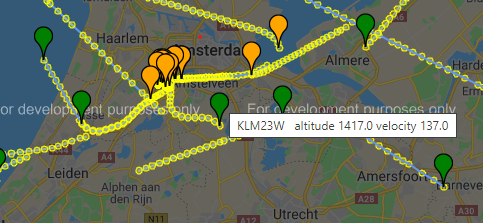

Some years ago I woke up early because of a loud aircraft flying over. Couldn’t get back to sleep and decided to use these precious early hours to visualize the air traffic around Hilversum.
Every aircraft is equipped with a device called a transponder that transmits flight data about the flight into the air. Organizations like OpenSky aggregate these data and make them available. Below a screenshot of the result, you can see the tracks and some information about the flight is displayed.

But when revisiting this initial project, I felt there were more opportunities. I obtained air traffic above the Netherlands from February to April (monday’s only), resulting in 11 full days of traffic.
Let’s see if there are more interesting patterns and visualisations. First we split the traffic by altitude.

- Red: The lowest flying traffic. Airfields such as Eelde, Eindhoven, Dusseldorf and Brussels are visible.
- Blue: All the complex movements of traffic in and out of Amsterdam. These are standard routes being flown to keep the traffic manageable, so called STARs and SIDs.
- Green: The highest flying aircraft are passing over in mostly straight tracks.
There are more properties in the data, such as altitude, vertical speed and velocity.

- Left: all the arriving flights are red and departures are blue.
- Middle: This disco shows aircraft climbing or descending. The colormap is increasing with 1000m per color, starting from red for 0-1000m. Compare it with the left graph: departing flights are quickly climbing to purple, whereas arrivals are flying lower longer. The green to yellow transitions indicate the points where arrival flights are converging for their approach.
- Right: the average speed of the aircraft. Also here you see arrival routes are darker (slower) than departures.
And because COVID-19 is here, let’s plot the data of the past weeks.

‘Normally’ there are 2700 flights above the Netherlands (including some North Sea) with a total airtime of 840 hours per day. That is the equivalent of about 35 aircraft flying continuously. The graph shows the dramatic slowdown to about 1/8 of the original volume.
The firelike image on the left side is slowly turning into a collection of night flies: the slowdown of traffic can be easily seen. This has been analyzed more extensively here.
I also went through callsigns that occur most often. Grouping different types of traffic results in some interesting patterns. A small quiz: which pattern belongs to: - The coastguard - Aerial photography - Military flights - Emergency care flights (trauma) - Police helicopters - Commercial helicopter flights
Answers on the bottom of the post.

Let’s end with some visualisations with a certain shade of blue. What type of flights do they represent?

That’s it, I had fun visualizing all of this, hope you enjoyed reading it!
Answers to the above: - A = Police helicopters. Lots of hovering probably. To the east the German police helicopters, with callsign HUMMEL. - B = Commercial helicopter flights. They mostly start from airfied Den Helder, flying personell to offshore rigs - C = Emergency medical flights. With callsign LIFELN (lifeliner), these helicopters are stationed in Amsterdam, Groningen, Rotterdam and Eindhoven. - D = Aerial photography. To capture the landscape below, these flights often have dense tracks flying back and forth. - E = Coast Guard, with callsign NCG - F = Military. In april a Boeing E-3 Sentry departed from NATO Air Base Geilenkirchen with probably a surveillance training mission.
And the blues represent our flagship carrier KLM!
If you want you can download the higher resolution images